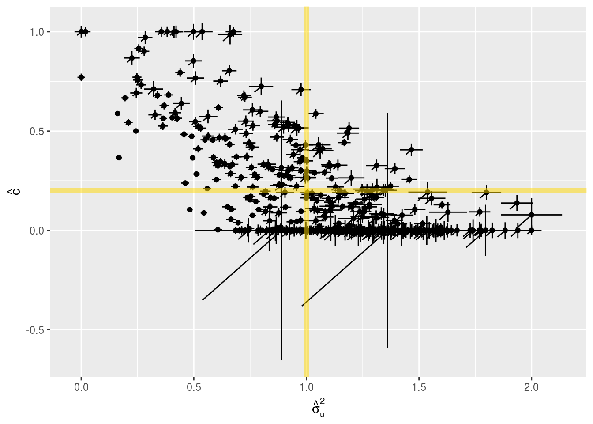
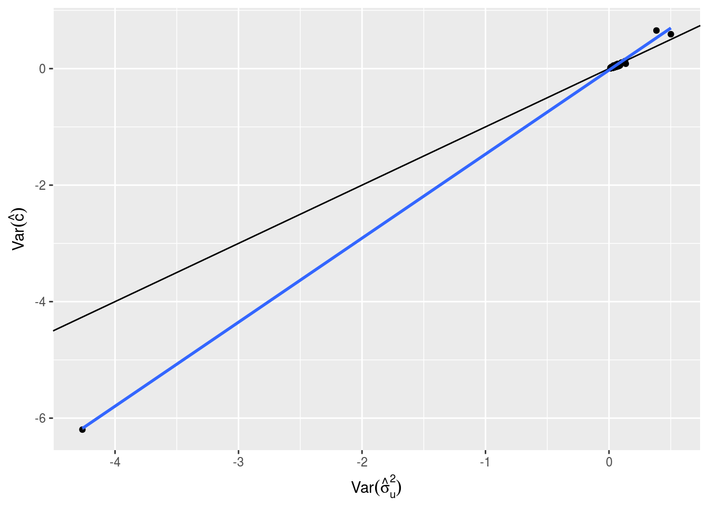

Last updated: 2017-11-28
Code version: 35b57ab
If we have \(n\) independent data points, each with the distribution \(f(x|\theta)\), for large \(n\), the MLE \(\hat{\theta}\) as approximately normal, with mean \(\theta\), and variance \(\frac{\tau^2(\theta)}{n}\), where
\[ \frac{1}{\tau^2(\theta)}=E \left( \frac{d}{d \theta} \log f(X_1|\theta) \right)^2 = -E \left[ \frac{d^2}{d\theta^2} \log f(X_1|\theta) \right]\]
Consider the scenario where \(X_i\) has density \(f_i(x|\theta)\), and
\[\sigma^2_i(\theta) = E \left( \frac{d}{d\theta} \log f_i(X_i|\theta) \right)^2 = -E \left[ \frac{d}{d\theta^2} \log f_i(X_i|\theta) \right]\]
In this case, \(\sqrt{n}(\hat{\theta}-\theta)\) is approximately normal with an expectation of \(0\) and a variance given by \[\frac{1}{\sum_{i=1}^n \sigma_i^2(\theta)}\]. (This result comes from equation 5.77 of the text of Stigler’s STAT 244 class)
Remember the marginalized form of \(\hat{u}\) (or check out the RSSp_Posterior post)
\[ \hat{\textbf{u}}|\sigma_u^2,c \sim N(0,\sigma_u^2R^2+R+cI_p)\] Also remember that we have diagonalized the LD matrix:
\[\sigma^2_uR^2+R+cI_p \\ = \sigma_u^2QD_R^2Q^{T} + Q D_{R} Q^{T} + cI_p \\ =\sigma_u^2QD_R^2Q^{T}+QD_LQ^{T} \\ =Q(\sigma_u^2D^2_R + D_L)Q^{T} \\ =Q(D_\textbf{u})Q^{T}\] Where \(D_R=\text{diag}\left(\lambda_i\right)\) ,\(D_L=\text{diag}\left(\lambda_i+c\right)\) and \(D_\textbf{u}=\text{diag}\left(\sigma_u^2\lambda_i^2+\lambda_i+c\right)\)
If we transform \(\hat{\textbf{u}}\), multiplying it by \(Q^{T}\), then instead of having a multivariate \(\hat{\textbf{u}}|\sigma_u^2,c\) , we now have \(p\) univariate normals, with densities given by
\[(Q^{T}\hat{\textbf{u}})_i|\sigma_u^2,c \sim N(0,\sigma_u^2\lambda_i^2+\lambda_i+c)\]
If we call \((Q^{T}\hat{\textbf{u}})_i\) \(\hat{q}_i\) then we can write the log-likelihood as:
\[-\frac{1}{2} \frac{\hat{q}_i^2}{c + \lambda_i^2 \sigma_u^2 + \lambda_i} - \frac{1}{2} \log(c + \lambda_i^2 \sigma_u^2 + \lambda_i) + \frac{1}{2} (-\log(2) - \log(π))\] The first derivative wrt. \(\sigma_u^2\) is
\[-\frac{\lambda_i^2 (c + \lambda_i^2 \sigma_u^2 + \lambda_i - \hat{q}_i^2)}{2 (c + \lambda^2 \sigma_u^2 + \lambda_i)^2}\]
The second derivative wrt. \(\sigma_u^2\) is :
\[\frac{\lambda_i^4 (c + \lambda_i^2 \sigma_u^2 + \lambda_i - 2 \hat{q}_i^2)}{2 (c + \lambda_i^2 \sigma_u^2 + \lambda_i)^3}\]
The first derivative wrt. \(c\) is
\[ -\frac{c + \lambda_i^2 \sigma_u^2 + \lambda_i - \hat{q}_i^2}{2 (c + \lambda_i^2 \sigma_u^2 + \lambda_i)^2}\] The second derivative wrt. \(c\) is
\[\frac{c + \lambda_i^2 \sigma_u^2 + \lambda_i - 2 \hat{q}_i^2}{2 (c + \lambda_i^2 \sigma_u^2+ \lambda_i)^3}\]
Finally, the cross term is: \[\frac{\lambda_i^2 (c + \lambda_i^2 \sigma_u^2 + \lambda_i - 2 \hat{q}_i^2)}{2 (c + \lambda_i^2 \sigma_u^2 + \lambda_i)^3}\] If we define \(\theta = \left\{ \sigma_u^2 , c \right\}\), and \(H_{.,.,i}\) to be the symmetric 2x2 Hessian matrix:
\[H_{.,.,i}=\begin{bmatrix}\frac{\lambda_i^4 (c + \lambda_i^2 \sigma_u^2 + \lambda_i - 2 \hat{q}_i^2)}{2 (c + \lambda_i^2 \sigma_u^2 + \lambda_i)^3} & \frac{\lambda_i^2 (c + \lambda_i^2 \sigma_u^2 + \lambda_i - 2 \hat{q}_i^2)}{2 (c + \lambda_i^2 \sigma_u^2 + \lambda_i)^3}\\\frac{\lambda_i^2 (c + \lambda_i^2 \sigma_u^2 + \lambda_i - 2 \hat{q}_i^2)}{2 (c + \lambda_i^2 \sigma_u^2 + \lambda_i)^3} & \frac{c + \lambda_i^2 \sigma_u^2+ \lambda_i - 2 \hat{q}_i^2 }{2 (c + \lambda_i^2 \sigma_u^2+ \lambda_i)^3}\end{bmatrix} =H_{.,.,i}=\frac{c + \lambda_i^2 \sigma_u^2 + \lambda_i - 2 \hat{q}_i^2}{2 (c + \lambda_i^2 \sigma_u^2 + \lambda_i)^3} \begin{bmatrix} \lambda_i^4 & \lambda_i^2\\ \lambda_i^2 & 1\end{bmatrix} \\ =\frac{c + \lambda_i^2 \sigma_u^2 + \lambda_i - 2 \hat{q}_i^2}{2 (c + \lambda_i^2 \sigma_u^2 + \lambda_i)^3} \begin{bmatrix}\lambda_i^2 \\ 1 \end{bmatrix} \begin{bmatrix}\lambda_i^2 & 1 \end{bmatrix}\] Then
\[\sigma^2_i(\theta_j) = E \left( \frac{d}{d\theta_j} \log f_i(X_i|\theta) \right)^2 = H^{-1}_{j,j,i}\]
This means that In this case, \(\sqrt{p}(\hat{\theta}-\theta)\) is approximately normal with an expectation of \(0\) and a variance given by \[\left(\sum_{i=1}^p \sigma_i^2(\theta)\right)^{-1}=\left(\sum_{i=1}^p - \frac{c + \lambda_i^2 \sigma_u^2 + \lambda_i - 2 \hat{q}_i^2}{2 (c + \lambda_i^2 \sigma_u^2 + \lambda_i)^3} \begin{bmatrix} \lambda_i^4 & \lambda_i^2\\ \lambda_i^2 & 1\end{bmatrix}\right)^{-1}\]
Note that the case of mutually independent SNPs (i.e \(R=I_p\)).
\[H^{-1}=\left(\sum_{i=1}^p - \frac{c + \sigma_u^2 + 1 - 2 \hat{q}_i^2}{2 (c + \sigma_u^2 + 1)^3} \begin{bmatrix} 1 & 1\\ 1 & 1\end{bmatrix}\right)^{-1}=\sum_{i=1}^p - \frac{2 (c + \sigma_u^2 + 1)^3}{c + \sigma_u^2 + 1 - 2 \hat{q}_i^2} \left(\begin{bmatrix} 1 & 1\\ 1 & 1\end{bmatrix}\right)^{-1}\]
The matrix \(\begin{bmatrix} 1 & 1\\ 1 & 1\end{bmatrix}\) is singular, as are all constant multiples of this matrix. This is perhaps not surprising given that in the case that all SNPs are unlinked, variance arising from \(\sigma_u^2\) and \(c\) are entirely indistinguishable. This is born out in simulation:
To verify the degenerate behavior in the independent SNP setting, we set \(p=100\),\(R=I_p\), \(\sigma_u=1\) and \(c=0.2\). The singularity of the Information Matrix will be assessed by computing the determinant of the hessian matrix returned by optim (these results were also verified by computing the hessian using it’s analytical form)
Now let’s add a non-diagonal LD matrix
Are our estimates centered around the true value? How well does the asymptotic normality assumption work with ~100 SNPs?
In this plot, each point is the MLE of \(\sigma_u^2,c\) from a random draw from \(\hat{\textbf{u}}|\textbf{u},c,R\). The vertical bars represent the asymptotic estimate of variance in \(c\), the horizontal bars represent the asymptotic estimate of variance in \(\sigma_u^2\), and the diagonal bar represents the asymptotic estimate of covariance between \(c\) and \(\sigma_u^2\). The gold colored lines indicate the true value of \(\sigma_u^2\) and \(c\)


This R Markdown site was created with workflowr